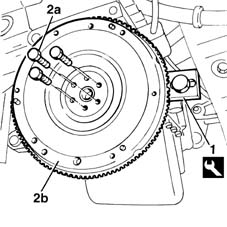
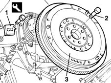

1024B22 engine flywheel - r r with clutch or gearbox removed
- Path
- Procedures > 10 ENGINE UNIT > 1024 CRANKSHAFT AND FLYWHEEL > 1024B engine flywheel > 1024B22 engine flywheel - r r with clutch or gearbox removed
- Kind
- repair procedure (removal / refitting; the operation number is the code)
- Applies to
- all engines; all production periods
- Interactive page
- https://sloeber94.github.io/elrnDB-fMltpl/en/#/2891213
Applies to: engines: 1.6 16v; all production periods
 Removing
Removing
 Refitting
Refitting1. Fit the flywheel retainer shown.
2. Undo bolts (2a) and remove engine flywheel (2b) together with the tool fitted previously.
 | Name | Country |
|---|---|---|
1 | Counter-torque | 1.860.846.000 |

Applies to: engines: 1.6 16v; all production periods
Refitting
RemovingFit the engine flywheel retainer.
| Name | Country |
|---|---|---|
- | Counter-torque | 1.860.846.000 |
Tighten the bolts retaining the flywheel to the crankshaft to torque.
 | Fastening | Component | Ø | Value (daNm) |
|---|---|---|---|---|
- | Bolt | FLYWHEEL | M10 | 8.3 |
Remove the flywheel retainer.
| Name | Country |
|---|---|---|
- | Counter-torque | 1.860.846.000 |
Applies to: engines: 1.9 JTD 8V; all production periods
Removing
Refitting1. Position the flywheel retainer.
2. Unscrew the flywheel retaining bolts.
3. Remove the flywheel together with the flywheel retainer.
| Name | Country |
|---|---|---|
1 | Counter-torque | 1.860.846.000 |

Applies to: engines: 1.9 JTD 8V; all production periods
Refitting
RemovingFit the flywheel into its seat on the crankshaft.
Fit the flywheel retainer.
| Name | Country |
|---|---|---|
- | Counter-torque | 1.860.846.000 |
Tighten the bolts securing the flywheel to the crankshaft to torque.
| Fastening | Component | Ø | Value (daNm) |
|---|---|---|---|---|
- | Bolt | FLYWHEEL | M12 | 16 |